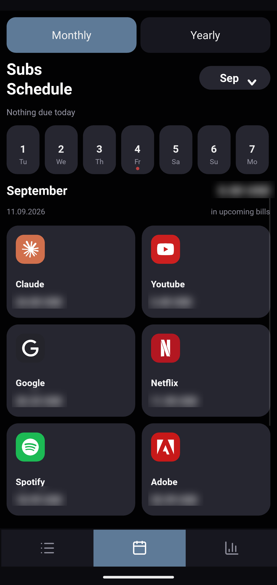
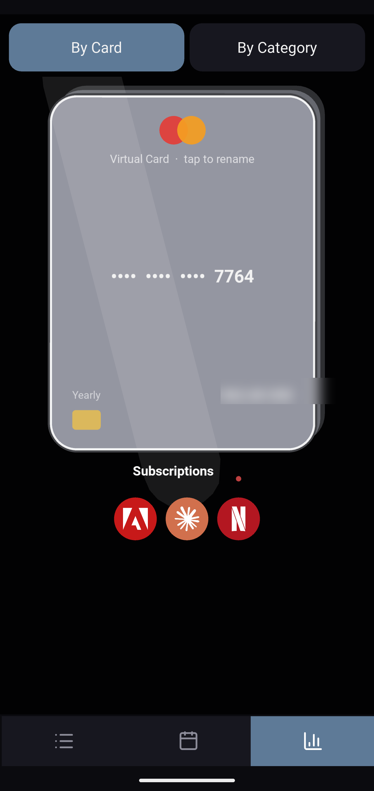
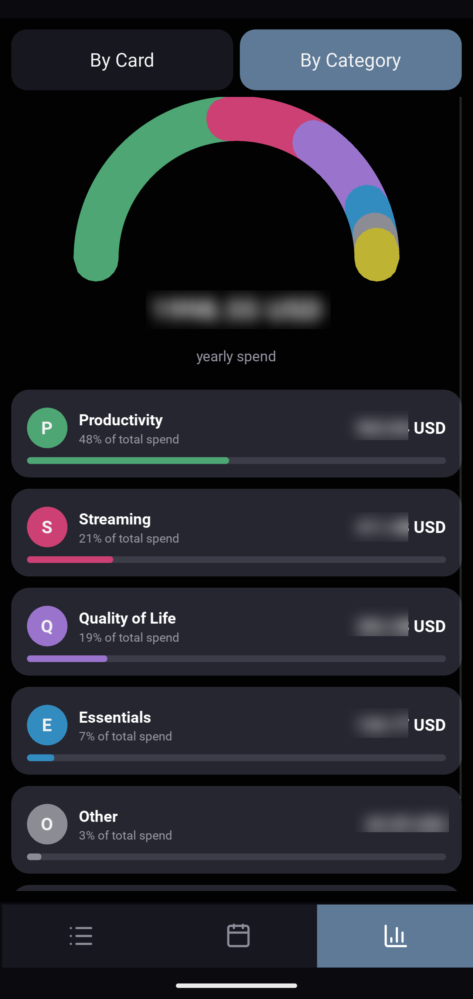
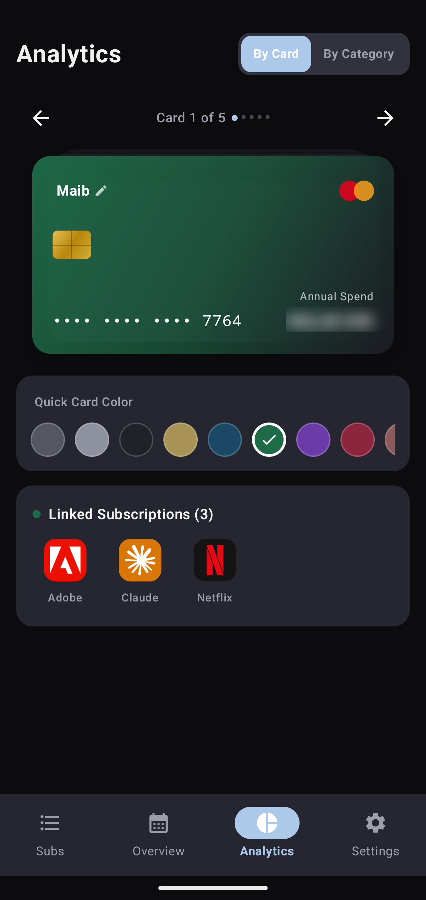

Subscription Tracker
Every recurring charge, in one place, entirely on-device — total due this month, what's renewing next, and where the money actually goes by category and by card.
Every recurring charge, in one place, entirely on-device — total due this month, what's renewing next, and where the money actually goes by category and by card.
I kept losing track of what was charging where — a card here, a yearly renewal there, currencies mixed in. Spreadsheets held the numbers but never warned me ahead of a renewal, and every tracker app I tried wanted an account or a cloud sync just to track subscriptions. So the brief stayed simple: one place, on the device, nothing more.
It's also where a slower run of ordinary Python — lists and dictionaries, loops, functions to stop repeating the same five lines, then file I/O — turned into something with a UI. Kivy was the on-ramp from script to window. This app was the first project where that pairing, data underneath and a real interface on top, had to hold up to daily use rather than run once and get thrown away — which is most of why it was rebuilt properly a second time.
The first working version — cross-compiled to an Android APK with Buildozer, built inside Docker for a reproducible toolchain.
The first version was plain — three tabs: add a subscription, a monthly aggregate, a yearly aggregate, nothing more. From there it turned into a study of Android UI conventions I hadn't worked with before: a floating action button, real navigation tabs, something that looked like a modern app instead of a form. Kivy pushed back on some of it — its FAB has no concept of reacting to scroll, so it just had to sit on screen permanently, the opposite of how a native FAB usually behaves. Analytics came next, once the base screens were solid — breakdowns by category and by card. The last thing added, with the app otherwise finished, was picking accent colors by hand in the spirit of Material You, since Kivy has no access to the system's own dynamic color.
Buildozer's Android toolchain is fragile to set up natively on Windows, so the build ran inside a container pinned to a known-good Linux image — reproducible, but every UI change meant a full rebuild-and-flash cycle instead of hot reload.
Kivy has no native Android notification API. Reminders were bridged through pyjnius into Android's Java APIs, wrapped in a foreground service — functional, but some OEM battery settings could still suppress it.
No calendar or schedule view yet, and no dynamic theming — colors were hardcoded rather than pulled from the system palette. Both became the brief for generation 2.



A full rebase — native, offline-first, MVVM with Clean Architecture boundaries. Nothing leaves the device.
The rebase kept the same logic and largely the same screens the Kivy version had already settled on — this wasn't a redesign, it was the same app done properly. What changed was what the platform could actually do with it: the FAB gained real behavior, including hiding on scroll instead of sitting fixed on screen the whole time. Settings hooked into the system's own settings surface instead of being a bespoke screen bolted on. And where Kivy needed things enforced by hand, or just used by convention — what counts as tappable, how far a touch target should reach — Compose has defined rules for that, so it came for free instead of being rebuilt.
The add button now opens a proper add/edit flow. Settings grew into full sections — language, theme, currency, reminders — instead of hardcoded defaults.
Reminders run on WorkManager — no JNI bridging, no foreground-service workaround, just the platform's own scheduling.
A calendar-first overview surfaces what's due by day, and Material 3's dynamic accent pulls the UI palette straight from the device wallpaper.


